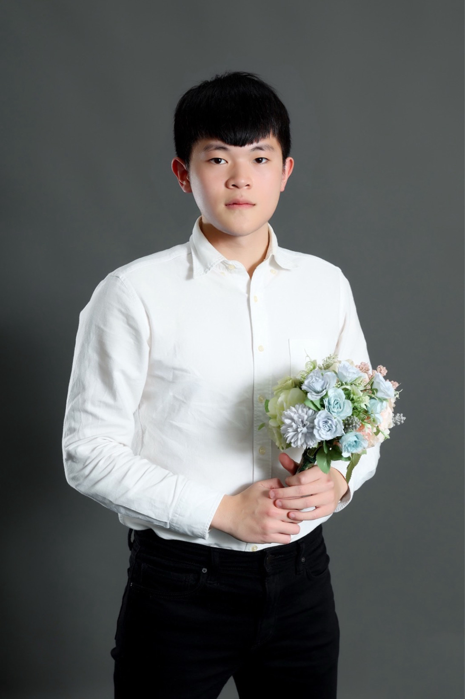

About
Hello, I’m Brian. Welcome to my portfolio!
I am an engineer and researcher pursuing a career in developing intelligent assistive robotic systems, including wearable robotics and assistive living robots that enhance human mobility, independence, and quality of life.
I am currently a research assistant at the Neurotech Lab (NTK Lab) at National Yang Ming Chiao Tung University, where I also conducted my undergraduate research. My current work includes the commercialization, optimization, and validation of our RGB-Based Multi-View 3D Markerless Motion Capture System. This involves improving system robustness, refining core algorithms, collaborating with hospitals for deployment, and leading a clinical validation study, including preparing the validation manuscript comparing system performance with gold-standard motion analysis tools.
During my undergraduate research at NTK Lab, I focused on building the system’s core software infrastructure, including extending the pipeline to support multi-person motion capture, developing and implementing the real-time framework, and designing a GUI tailored to clinical and research workflows. In parallel, I contributed to motion-analysis and biomechanics studies across multiple clinical populations—including stroke, sarcopenia, lower back pain, Parkinson’s disease, and Alzheimer’s disease—supporting data collection, kinematic feature extraction, and quantitative evaluation of movement impairments.


Welcome to reach out !